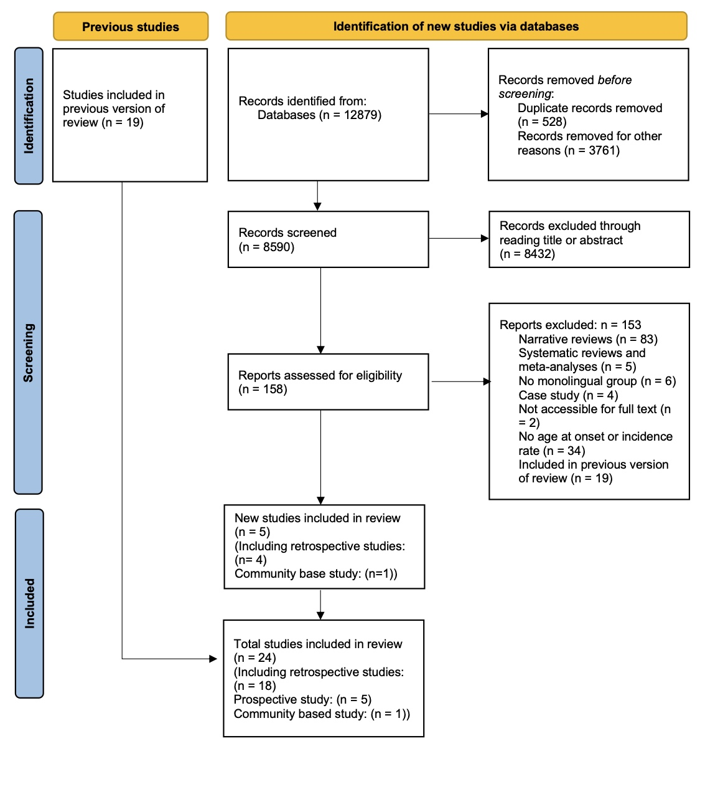

Warning: Using `size` aesthetic for lines was deprecated in ggplot2 3.4.0.
ℹ Please use `linewidth` instead.Bilingualism and Dementia_A Bayesian Meta-analysis
Introduction
The ageing adults may face an increasing risk of dementia, a range of neurodegenerative diseases, as a result of deterioration of brain tissue (de Mooji et al., 2018) and a loss of functional connectivity between regions (Brier et al., 2012). Such diseases affect language skills, memory and in later stages, bodily functions (Horner et al., 1994; Berkes & Bialystok, 2022). With the ageing population and increased longevity of life, the prevalence of dementia also increases (Anderson, Hawrylewicz, & Grundy, 2020; Berkes & Bialystok, 2022). According to the World Health Organisation (2020), the total number of patients with dementia may rise to 82 million in 2030 and more than 150 million in 2050, which will bring enormous physical and psychological stress on both individual and societal levels. Unfortunately, it is still unclear how to prevent the pathology in ageing adults (Kepp, 2016) and the pharmaceutical treatments’ effects on slowing down its progression are inadequate (Massoud & Gauthier, 2010). However, several socio-behavioural factors may contribute to cognitive reserve, which helps individuals use compensatory mechanisms or functional processes to cope with neurodegeneration and pathology (Bialystok, Craik, & Freedman, 2007). These factors include education (Stern et al., 1999), complex social networking (D.A. Bennet et al., 2006), challenging occupational tasks (Stern et al., 2020), increasing physical activity (Sofi et al., 2011), and bilingualism (Berkes & Bialystok, 2022; Jafrai et al., 2021).
Recently, numerous studies have focused on the potential bilingualism effect on cognitive enhancements including improved attentional control, working memory, metalinguistic and metacognitive awareness. Moreover, these enhancements resulting from bilingualism across the lifespan may contribute to cognitive reserve, which delays the onset of dementia for 4 to 5 years according to some retrospective studies. Yet, prospective studies revealed inconclusive results on bilingualism’s effect on reducing the risks of dementia (see Lawton, Gasquoine, & Weimer, 2015 for null results; Zahodne et al., 2014 for positive results) while other retrospective studies showed a shorter delay of onset of dementia (e.g., 1.5 years: Berkes et al., 2020; 0.9 years: Chertkow et al., 2010). Previous meta-analyses also revealed inconsistent results. Mukadam, Sommerlad, and Livingston’s (2017) meta-analysis only included four prospective studies and found no evidence for the protective effects of bilingualism on dementia while Anderson, Hawrylewicz, and Grundy’s (2020) meta-analysis that included 15 age-of-onset studies and 6 incidence studies found moderate evidence for bilingualism’s delaying of symptoms (Cohen’s d = 0.32) and weak evidence for bilingualism’s reducing the incidence of having the AD (d = 0.10). Despite such inconsistency, one potential modulating variable, dementia types, has been neglected by previous meta-analyses. Lee (2022) pointed out that different subtypes of dementia seem to be deferred by different lengths of time in bilinguals compared with monolinguals. For instance, in Alladi et al. (2013), bilingualism’s delayed length of onset was 3.2 years, 6.0 years, 3.7 years, and 2.3 years for Alzheimer’s dementia (AD), frontotemporal dementia (FTD), vascular dementia (VaD) and dementia with Lewy bodies (DLB). Therefore, it would be necessary to conduct a new meta-analysis to include more recent research and examine the effect of dementia types to better address the bilingualism-dementia link.
Mechanisms behind Bilingualism’s Effect on Dementia
Introducing Cognitive Reserve
Reserve in a broader sense refers to the individual variations in cognitive ability, clinical condition, and functional capacity in ageing and brain disease, which indicates that specific conditions of brain health can lead to different cognitive or functional outcomes in different individuals (Berkes & Bialystok, 2022). Stern et al. (2020) stated that there are different types of reserve, namely brain reserve and cognitive reserve. The former refers to the neurobiological quality such as cortical thickness, quantity of neurons, and total brain volume at a given point in time (ibid.). Individuals with high brain reserve are supposed to better withstand ageing and neurological decline since they have more tissue to lose. Such a passive model of reserve is impacted by genetic and lifestyle factors, and it does not invoke active cognitive adaption (Stern et al., 2020). In contrast, cognitive reserve is thought of as an active reserve form which depends on individuals’ adaptability to cognitive processes (Berkes & Bialystok, 2022). As mentioned before, Individuals can adopt remedial mechanisms to better cope with ageing and brain loss (ibid.). In this sense, there should be several outcomes when comparing high-cognitive reserve and low-cognitive reserve ageing adults. At similar levels of neuropathology, high cognitive reserve individuals should show better cognitive performance than their low cognitive reserve peers. For individuals with similar cognitive performance, high-cognitive reserve individuals are expected to have more neuropathology than low-cognitive reserve individuals. Moreover, high-cognitive reserve individuals are expected to show delayed symptom onset compared with matched low-cognitive reserve individuals.
There are many factors that may contribute to cognitive reserve, which are limited by two prerequisites (Berkes & Bialystok, 2022). The first one is that these factors should be sufficiently challenging and continuous (Scarmeas & Stern, 2003). The second one is that individuals with higher levels of these factors or richer experience of the potential activities should show better cognitive condition. Thus, these factors should include both activities from early life such as higher education and ongoing activities such as challenging physical and mental activities (Stern, 2002, 2012).
Bilingualism as a Contributor of Cognitive Reserve
The use of multiple languages is considered a challenging activity since bilinguals have to constantly deal with the joint activation of both languages (Bialystok, Craik, & Luk, 2012). Evidence for such joint activation is found by psycholinguists from cross-language priming, which is the facilitative effect of a word in one language on the retrieval of a semantically related word in another language (e.g., Thierry & Wu, 2007). This means that bilinguals have to select the appropriate language while inhibiting the others for effective language production, which allows bilinguals to possess better inhibitory control than monolinguals. Yet, Bialystok and Craik (2022) argue that inhibitory control is not enough to account for bilingualism’s enhanced cognitive function (EF) since dual language use involves not only inhibition but also facilitation of relevant processing, selection, and working memory. Despite different theories of explanation for the bilingualism effect, numerous empirical studies have shown that bilinguals outperform their monolingual peers on executive function tasks (e.g., Blom et al., 2014; Comishen & Bialystok, 2021). The “advantage” is generally more obvious in older adults with null results mostly found in younger adults who may reach the ceiling effect.
From the perspective of neuroscience, one explanation for bilinguals’ enhanced executive function may be that multiple language use reallocates the cognitive demand from anterior regions to posterior lobes and subcortical regions including basal ganglia (Grundy et al., 2017). The anterior lobes are typically believed for complex EF tasks while posterior and subcortical regions are largely believed for automatic processing. Several neuroimaging studies have provided evidence for such a shift to improve neural efficiency in the bilingual brain. For instance, Abutalebi et al. (2015) used fMRI to record bilingual and monolingual brain signals when they performed flanker tasks. The results show that bilinguals showed better behavioural performance and that they recruited less anterior cingulate cortex (ACC) than monolinguals (ibid.). In Waldie et al.’s (2009) study, the fMRI results showed that Macedonian-English bilinguals possessed more activation in the basal ganglia area compared with monolinguals when they performed a Stroop task. Since basal ganglia is a subcortical area that functions as a gate for anterior cortical regions, Waldie et al. (2009) also provide evidence for bilinguals’ reallocation of cognitive resources.
As adults age, their decreased automatic processing ability requires them to occupy the anterior lobes that are originally responsible for complex EF with simple tasks (Grady et al., 1994; Davis et al., 2008). This should at least partially account for older adults’ difficulty in performing complex tasks and declined cognitive function (Davis et al., 2008). Thus, bilingualism contributes to cognitive reserve by reallocating the cognitive demand from anterior regions to posterior and subcortical regions and sustaining the automatic process, which leaves space for complex EF.
The Limits of Bilingualism Effect on Dementia
Following the above argument, bilinguals who are high cognitive reserve individuals are supposed to better withstand neurodegeneration than monolinguals who are low cognitive reserve individuals. However, studies from different perspectives (prospective and retrospective) revealed different results, which indicates that there are limits that bilingualism can do in terms of protection against dementia. The following part will briefly introduce previous studies and meta-analyses on the perspectives respectively.
As mentioned before, one important prediction from cognitive reserve is that individuals with high reserve will show a delayed onset of impairment than individuals with low reserve (Berkes & Bialystok, 2022). Retrospective studies compared the age of onset or diagnosis of dementia for both bilinguals and monolinguals in clinical samples. Bialystok et al. (2007) were the first to examine such effects on clinical populations with dementia. By examining the records of 184 patients with equivalent progression of Mini-Mnetal State Examination (MMSE; Folstein, Folstein, & McHugh, 1975) scores in Toronto Canada, they found that bilingual patients developed symptoms of dementia later than their monolingual peers for around 4 years (F (1, 178) = 9.16, p<0.003). The results have been replicated in different populations in various countries such as China (Zheng et al., 2018), India (Alladi et al., 2013), and Belgium (Woumans et al., 2015). Given the mostly positive results of previous retrospective studies and the moderate effect (Cohen’s d = 0.32) of previous meta-analysis (Anderson, Hawrylewicz, and Grundy, 2020), it seems that bilingualism’s delaying effect is less inconclusive than incidence rate studies.
Comparing to retrospective studies, most prospective studies have a different outcome variable, the dementia incidence rate in certain populations (Grundy & Anderson, 2017). These studies track groups of healthy individuals and collect the rates of dementia in the groups during the study period. Yet, these prospective studies tend to find non-significant results of bilingualism’s preventive effects. For instance, Zahodne et al. (2014) followed a sample of 1067 old Spanish-English bilinguals and Spanish monolinguals in New York while collecting their cognitive test scores and clinical diagnoses every 18 to 24 months for approximately 20 years. At the end of the study, 31% of monolinguals and 20% of bilinguals had been diagnosed dementia (ibid.). The results showed that bilingualism was associated with 0.291 lower log odds of incidence rates. After accounting for other predictors, bilingualism was not correlated with dementia risk despite attending higher education and being female being associated with lower dementia risk (Zahodne et al, 2014). Similarly, Lawton, Gasquoine & Weimer (2015) and Ljungberg et al. (2016) also found no single correlation between reduced dementia risk and bilingualism in the US (x2(1, n=81) = .13, p = .72) and Sweden (bilinguals: Hazard Ratio = 1.43, 95% CI = 0.73 − 2.85, p = .29) respectively. Moreover, Mukadam, Sommerlad, and Livingston (2017) conducted a meta-analysis using only four prospective studies and found that bilingualism was not related to the protective effect of cognitive decline or dementia (Odds Ratio of dementia rates in bilinguals compared with monolinguals: 0.96 with a 95% CI [0.74 – 1.23]). They further argued that public health policy should not recommend bilingualism as “a strategy to delay dementia” (ibid., p.53). Yet the present study will argue that their argument is premature and that the difference of bilingualism’s delaying effect and preventive effect should be drawn.
Since the publishment of their meta-analysis (Mukadam, Sommerlad, and Livingston, 2017), several scholars have criticized their conceptual and methodological approach (Woumans et al., 2017; Grundy & Anderson, 2017). For the conceptual issue, the prospective studies examined the dementia incidence rate, which is different from age at onset of dementia, the outcome variable of retrospective studies. The interpretation of the null summary effect of the four prospective studies should not be conflated with bilingualism’s effect on the age of dementia onset. Thus, Mukadam, Sommerlad, and Livingston’s (2017) results can only partially show that there is no robust evidence that bilingualism can reduce the incidence rates of dementia. For the methodological issues, their meta-analysis neglected two additional studies that showed a bilingual advantage in their study. Additionally, one recent community study conducted by Venugopal et al. (2023) also committed a bilingual effect on lower dementia risks among non-immigrant populations in India. Given these limitations of previous meta-analysis, the present meta-analysis will reexamine the bilingualism’s effect on age at onset of dementia and incidence rates respectively.
Additionally, there may be some limits considering the effect of bilingualism on dementia. There is no reason to expect bilingualism as a factor of cognitive reserve to prevent dementia’s neuropathology since cognitive reserve helps the old to better withstand the impact of neuropathology but not to avoid it from happening. If bilingualism indeed has a preventive effect against dementia, other mechanisms are supposed to be found to explain such an effect. Given these inadequacies of previous meta-analysis and the potential limits of the bilingualism effect, the present meta-analyses will reexamine the bilingualism’s effect on age at onset of dementia and incidence rates respectively.
Research Questions
(1). Are there differences between the age at onset of dementia for bilinguals and monolinguals? If so, is the effect influenced greatly by bias? (2). Is there a bilingualism preventing effect on dementia? (3). Are there other variables that influence the relation between bilingualism and age at onset of dementia?
To address the first research question, a Bayesian linear regression model will be fitted using the data from 18 retrospective studies to investigate the relation between bilingualism and age at dementia onset. The estimated difference in age at dementia onset between bilinguals and monolinguals will be calculated through the avg_comparison() function (Arel-Bundock, Greifer, & Heiss, Forthcoming). The inspection for bias will be achieved through the funnel plot (Light & Pillemer, 1984). For the second research question, another Bayesian linear regression model will be fitted using data from 6 incidence rate studies. For the last research question, this meta-analysis will first incorporate years of education as a confounding variable into the model. The results will indicate whether years of education strongly influence the effect of bilingualism on dementia. It will then run sub-group analyses to investigate whether bilingualism defers different types of dementia differently. This will be further explained in the section 3.5.
Methods
Literature Searching
The datasets used in the present meta-analysis were PsycInfo, PubMed, and Google Scholar. A search of these databases was conducted between May 2024 and July 2024 with the following keywords: “bilingualism and dementia”, “AD onset bilingualism”, and “dementia onset bilingualism”.
Inclusion and Exclusion Criteria
For study to be included, it must meet the following criteria: (a). The study must include the bilingual and monolingual samples. (b). The study should be about dementia or mild cognitive development (MCI). (c). The articles included need to provide necessary information of both bilingual and monolingual groups (i.e., for age at onset study: sample size, the mean age of onset and standard deviation of each group; for incidence rate study: sample size, the number of individuals who developed dementia during the study period). Additionally, they have to report mean years of education and standard deviation for both bilingual and monolingual groups.
Data Coding
After collecting the included studies, it is necessary to code the data for analysis. For the age at onset study, the column names in the data set include Study, mean, SD, N, mobi, dementia_type, and years_of_education. In detail, in the Study column, the last name of all the authors (if the number of authors is under three) or the last name of the first author (if the number of authors is above three) and year of publication were extracted for each study. The mean and SD are the mean age at onset/diagnosis for dementia or MCI and its standard deviation. N is the number of participants in each group within each study. The monolingual and bilingual group is represented under the mobi column as monolingual and bilingual.
For incidence rate studies, the necessary columns in the data set are Study, Total, Dementia, and group. Apart from the Study being the same coding approach, Total specifies the total number of participants in the prospective studies while Dementia records the number of individuals who developed dementia during the study period. The monolingual and bilingual group is represented under the group column as monolingual and bilingual.
Statistical Analysis
The present meta-analysis will employ the brm package in R (Bürkner, 2019) to fit a meta-analytical model using a Bayesian linear regression with measurement error (se (Est.Error) in the model formula. In this sense, this meta-analysis is different from meta-analyses in the frequentist frameworks since it does not employ effect size and the summary effect (a point estimate) as the meta-analytic estimate (Schmid, Carlin & Welton, 2020). Instead, it produces a posterior probability distribution which reveals more uncertainty of the data. The prior setting, forest plot and funnel plot drawing will be explained further in the results section.
Confounding Variables and Modulating Factor
Apart from generating summary effects for included studies, it is necessary to check the effect of other confounding variables especially when there is an inconsistent relation between an independent variable and an outcome across studies (Frazier et al., 2004). The confounding variable is different from the modulating variable because their relations to the independent variable, outcome variable and the effect are different. A confounding variable has its influence on both the outcome (in this meta-analysis: age at onset or incidence rates) and the independent variable (bilingualism). A modulating factor influences or changes the interactions between variables. Following previous meta-analysis (Anderson, Hawrylewicz, and Grundy, 2020), the present study will also conduct an extra regression model to include the confounding variables years of education (YoE). Additionally, it will also conduct a subgroup analysis to compare the effect of types of dementia since the dementia type is a categorical variable that influences the potential bilingualism effect on delaying age at dementia onset. The following section will explain the reason to treat YoE as the confounding and the type of dementia as the modulating variable respectively.
Education as a Confounding Variable
Bak (2016) states that education and immigration status are two obvious confounding variables of bilingualism research. In a systematic review conducted by Sharp and Gatz (2011), 51 out of 88 studies that examined the relationship between dementia and education showed a significant effect. Their results show that lower education is related to increased risks of dementia, especially in developed countries (ibid.). In some retrospective studies of bilingualism and dementia, the differences between the years of education of bilinguals and monolinguals were often noteworthy. For instance, the mean years of education for monolinguals and bilinguals were 6.9 and 13.9 respectively in Alladi et al. (2017) and 4.92 and 10.97 in Zheng et al. (2018). Some studies argued that bilingualism was still a significant factor in delaying dementia onset after controlling the covariates including education (e.g., Alladi et al., 2013), yet the statistical power may be weak due to the small sample size (Paap, 2019). Although the significant relationship between the risks of dementia and education was not always replicated (Gatz et al., 2001), it is still necessary to examine its influence on the current result of the meta-analysis model. This is also because, in some areas, children have to attend education to be bilinguals. For instance, in countries that consider English as a foreign language such as China, students have to learn English at school to be Mandarin and English bilinguals. Therefore, the relation between education, bilingualism and dementia is shown in Figure 1.
Additionally, immigration status has been argued to confound the bilingualism effect since healthier people are more likely to become immigrants, who are also bilinguals (Fuller-Thomson & Kuh, 2014). However, this meta-analysis will not further analyse the effect of immigration status because of the following reasons. Firstly, many studies demonstrating a bilingualism effect have shown that the influence of immigration status is limited since their participants were non-immigrants (e.g., Alladi et al., 2013; Zheng et al., 2018). In other words, if the bilingualism’s protective effect on dementia is indeed due to the healthy immigrant effect, no bilingualism advantage is supposed to be found in these studies. Secondly, Brini et al. (2020) conducted sub-group analysis to compare the study that adjusted for immigration status to those that did not in their meta-analysis of bilingualism and age at onset of dementia. The results showed that the two sub-groups were not significantly different concerning bilingualism’s delaying effect (ibid.). Thus, the present meta-analysis will not repeat the sub-group analysis of immigration status.
Dementia Type as a Modulating Variable
As mentioned in the introduction, bilingualism’s effect may be different for different types of dementia (Alladi et al., 2013). Even within the same sample, the difference in the delaying effect can be quite large (4 years for FTD dementia and 1.4 years for Mixed dementia in Alladi et al., 2013). On the contrary, different types of dementia do not affect the bilingual status of individuals. Therefore, the types of dementia only modulate the strength of bilingualism effect on delaying the age at onset. Additionally, this meta-analysis also includes MCI studies, which are not traditionally dementia studies. It would be necessary to run subgroup analyses to better summarise its potential effect and to demonstrate whether the type of dementia is a source of inconclusive results.
Results
Literature Searching
Shown in Figure 2, a total of 24 studies were included through searching the databases and checking the references of previous meta-analyses. Among the 24 studies, 18 studies’ primary outcome measures were age at onset/diagnosis of dementia or MCI (k = 18) and the rest of them were the risk of developing dementia (k = 6).

To fit in the Bayesian meta-analysis model, the researcher retrieved the summary data from each study including the age at onset/diagnosis including standard deviation, number of individuals in bilingual and monolingual groups, years of education for each group, and dementia types in each study. One special case is that Zheng et al. (2018) included two monolingual groups: Mandarin and Cantonese. Different from previous meta-analyses to combine them into one monolingual group (Brini et al., 2020), the Bayesian linear model allows for two monolingual groups and one bilingual group. For the age at onset/diagnosis model, the final included sample was 23 pairs of participants (N = 3674, including 2023 monolinguals and 1641 bilinguals).
Read data for age at onset studies
Prior Distribution Setting
For a specified Bayesian model, the posterior inference relies on both the likelihood and the prior (Schmid, Carlin, & Welton, 2020). The present Bayesian random-effect model for age at onset studies specifies three priors. First, it specifies a LKJ (2) prior on the correlation matrix (Nicenboim, Schad, & Vasishth, 2024). The setting of its parameter ùúÇ = 2 would avoid favouring extreme correlations, which provides a relatively uninformative or weakly informative piror. Second, it specifies a Student-t distribution with 3 degrees of freedom, mean of 0 and scale of 9 since it is the brms default. This prior expects the standard deviations of the random effects to have large variability since different studies included in the meta-analysis may have large heterogeneity. Third, the prior for the main coefficients is a Gaussian distribution with mean = 65 and SD = 25. This indicates that values (in the case, age at onset of dementia) would fall within 95%Crl of (65 ¬± 2*22.5) years. The reason for a prior belief of the mean age at onset to be centred around 65 is that most previous study have dementia age at onsets around 58 and 76, which is important historical evidence (Turner et al., 2009). Also, the 95 credible intervals of 20 and 110 provide enough variability for the age onset of adult neurodegenerative disease.
Results for Meta-analysis of Bilingualism and Age at Onset of Dementia
Fit the model with the group-level intercept “Study”
We fitted a Bayesian linear regression model with mobi (language group) as the predictor, mean (age at onset) as the outcome variable and measurement error (added with se (SE) at the left side of the model formula). The results showed that at the population level, the estimated age at dementia onset for monolinguals was between 65.04 and 68.82 years at 95% Crl (β = 68.39, Est.Error = 1.64). For bilinguals, the estimated age at dementia onset was between 68.82 and 74.61 years at 95% Crl (β = 71.68, Est.Error = 1.49). I further used “avg_comparisons()” function to summarise the average marginal effects for bilinguals and monolinguals (Arel-Bundock, Greifer & Heiss, Forthcoming), which showed that the average difference between the age at dementia onset for bilinguals and monolinguals was between 2.8 and 4.1 years at 95% Crl with an estimate of 3.45 years. This meant that the bilingual population tends to have a later dementia symptom onset of around 3.45 years than monolinguals based on the provided data. A similar result was also shown in the forest plot of the difference in effect for bilinguals and monolinguals in which the majority of the studies have a positive value that favours bilingualism (see Figure 3). The majority of studies’ 95% creditable interval was positive. Only one study (Ducan et al., 2018) resulted in a negative effect that monolinguals have a later dementia onset than bilinguals for around 1.42 years. Overall, the meta-analytic effect showed a relatively positive result that favoured bilinguals’ delayed onset of dementia. The following section will check the heterogeneity across the studies.
#Forest plot for the main Meta-analysis
Heterogeneity across Studies
In the present Bayesian meta-analysis model, heterogeneity was mainly expressed by the random effects at the group level, which was the difference in age at onset for mobi (monolingual group and bilingual group) across different study levels. At the group level, the standard deviation for mobimonolingual and mobibilingual were 7.13 with a 95% Crl [5.24, 9.93], and 6.54 with a 95% Crl [4.79, 9.15]. This relatively large standard deviation indicated that there was high heterogeneity across studies although the summary meta-analytic effect was positive. This indicated that the summary effect may be influenced by the large heterogeneity and that it would be necessary to examine the source of such heterogeneity. Therefore, the researcher used the spread_draws() function (Kay, 2023) to draw two new forest plots that show the difference between the population-level mean age at dementia onset and each study’s age at dementia onset for bilinguals and monolinguals respectively (see Figure 4).
As illustrated in Figure 4, the studies seemed to be divided into three groups for each of the two plots. The estimated mean age at onsets for the first group of 8 studies were later than the population-level age at onset for around 3 to 8 years (Berkes et al., 2020; Bialystok et al., 2014; Chertkow et al., 2010; Clare et al., 2016; Craik et al., 2010; Ossher et al., 2013; Perani et al., 2017; Woumans et al., 2015). For the second group of 6 studies, the mean age at onsets were earlier than the population-level age at onset for around 6 to 10 years (Alladi et al., 2013; Alladi et al., 2017; de Leon et al., 2020; de Leon et al., 2024; Ramakrishnam et al., 2017; Mendez, Chavez & Akhlaghipour, 2020). The third group of 4 studies (in the middle of the plot) were more complex, which clustered around the estimated population-level age at onset yet with different patterns for bilinguals and monolinguals (Bialystok et al., 2007; Duncan et al., 2018; Kowoll et al., 2016; Zheng et al., 2018). For instance, in Duncan et al. (2018), the estimated mean effect for bilingual group was close to the population-level effect but its monolinguals’ estimation was more than 5 years later than the population-level effect for monolinguals. Such difference in monolingual and bilingual groups made Duncan et al. (2018) the only one study that had a bilingual early mean dementia onset estimation, which is shown in the Figure 3.
A careful investigation into the contexts of each study provided some potential evidence for such heterogeneity. One prominent difference between the first and second groups of studies might be the type of dementia. Among the 6 studies in the second group, three of them involved the FTD variant of dementia, one of them involved MCI patients and the other two involved AD patients. In contrast, seven out of eight studies in the first group and all of the four studies in the third group involved AD patients despite one study having MCI patients. Such differences in the distribution of types of dementia among different groups of studies further called for sub-group analysis of different types of dementia and to investigate whether the type of dementia influences the differences in age at onset of dementia in bilinguals and monolinguals (see 4.3.3).
The Role of Education being Uncertain
To examine whether years of education had an influence on the meta-analytic effect, I included years of education into the right side of previous Bayesian linear model. The results showed that the population-level effect of years of education on the age at onset of dementia was between -0.63 and 0.36 at 95% Crl (β = -0.11, Est.Error = 0.26). It was quite uncertain about the role of Education since the effect involves both negative and positive values. This indicates that we are still uncertain whether years of education has an effect on age at onset of dementia (either positive or negative) or not based on the data in the meta-analysis.
Additionally, the estimated mean age at dementia onsets for monolingual and bilingual were 69.62 years with a 95% Crl [63.16, 77.00] and 73.03 years with a 95% Crl [66.05, 80.53] after including years of education into the model. Using avg_comparisons() again, the mean average difference between the age at dementia onset for bilinguals and monolinguals was 3.65 years with a 95% Crl [2.55, 4.91]. The result was close to the previous model where education was not included (3.45 years with a 95% Crl [2.8, 4.1]). Therefore, the results from Bayesian linear regression indicated that years of education did not have a strong effect on the effect of bilingualism on age at onset of dementia although the role of education is uncertain.
Sub-group Analysis of Dementia type
Table 1. Cross-sectional Studies of Three Dementia Sub-groups
| Study | Dementia Diagnosis | Type of Dementia or MCI | Mean Age of Diagnosis & Symptom Onset (SD) |
|---|---|---|---|
| Alladi et al., 2013 | Cambridge Memory Clinic model | AD | ML: 65.4 (10.0); BL: 68.6 (9.6) |
| Bialystok et al., 2007 | NINCDS-ADRDA | AD | ML: 71.4 (9.6); BL: 75.5 (8.5) |
| Bialystok et al., 2014 | NA | AD | ML: 70.9 (11.0); BL: 78.2 (8.9) |
| Berkes et al., 2020 | MMSE, MoCA | AD | ML: 78.2 (7.7); BL: 79.8 (8.4) |
| Chertkow et al., 2010 | Patient & caregiver interviews | AD | ML: 76.7 (7.8); BL: 77.6 (7.2) |
| Clare et al., 2016 | LQ-SV | AD | ML: 76.2 (8.75); BL: 79.3 (6.78) |
| Craik et al., 2010 | NA | AD | ML: 72.6 (10); BL: 77.7 (7.9) |
| de Leon et al., 2020 | NA | AD | ML: 60.3 (9.8); BL: 61.9 (9.8) |
| Duncan et al., 2018 | NINCDS-ADRDA | AD | ML: 74.3 (1.5); BL: 72.6 (1.6) |
| Kowoll et al., 2016 | NINCDS-ADRDA | AD | ML: 71.6 (7.9); BL: 74.6 (6.8) |
| Perani et al., 2017 | NIA-AA | AD | ML: 71.4 (4.88); BL: 77.1 (4.52) |
| Mendez, Chavez & Akhlaghipour, 2020 | NIA-AA | AD | ML: 58 (10.7); BL: 62.4 (10.5) |
| Woumans et al., 2015 | Neurologist + Neuropsychologist | AD | ML: 73.8 (8.8); BL: 75.5 (8.2) |
| Zheng et al., 2018 | NINCDS-ADRDA | AD | ML: 63.9 (96.5), 63.4 (8.94); BL: 70.9 (9.37) |
| Alladi et al., 2013 | Cambridge Memory Clinic model | FTD | ML: 55.6 (10.5); BL: 61.6 (9) |
| Alladi et al., 2017 | MMSE, ACE-R, CDR, FrSBe | FTD | ML: 58.4 (9.3); BL: 61.7 (9.1) |
| de Leon et al., 2024 | NA | FTD | ML: 59 (9.2); BL: 61.4 (7.9) |
| Berkes et al., 2020 | MMSE, MoCA | MCI | ML: 75.5 (7.6); BL: 77.8 (8.2) |
| Ossher et al., 2013 | Neuropsychological interview | Single Domain aMCI | ML: 74.9 (49); BL: 79.4 (6.3) |
| Ossher et al., 2013 | Neuropsychological interview | Multiple Domain aMCI | ML: 75.2 (8.5); BL: 72.6 (7.2) |
| Ramakrishnan et al., 2017 | Petersen’s criteria | MCI | ML: 55.8 (12.2); BL: 63.2 (10.1) |
Abbreviations: ML = Monolinguals; BL = Bilinguals; MCI = Mild Cognitive Impairment;
ACE-R = Addenbrooke’s Cognitive Examination-revised; FrSBe = Frontal Systems Behaviour Scale;
MMSE = Mini-Mental State Examination; MoCA = Montreal Cognitive Assessment;
NINCDS-ADRDA = National Institute on Aging-Alzheimer’s Association consensus criteria
The sub-group analysis was used to compare whether the difference of the age at onset of dementia between bilinguals and monolinguals was different across different types of dementia. The studies were divided into three sub-groups: AD dementia sub-group (including 14 studies), FTD dementia sub-group (including 3 studies), and MCI sub-group (including 3 studies). The total number of studies was 20 because two studies (Alladi et al., 2013; Berkes et al., 2020) involved more than one type of dementia. For each sub-group, a Bayesian linear regression model which is similar to the main meta-analysis was employed with the same priors that had been set before (see Appendix II for forest plots of the three sub-groups).
#AD
#Forest plot for AD sub-group
For the AD dementia sub-group, the results showed that at the population-level, monolinguals had an age at AD onset at 70.39 years with a 95%Crl [66.90, 73.33] while the age at AD onset for bilinguals was 73.68 with a 95%Crl [70.59, 76.69]. The mean average difference between the age at AD onset for bilinguals and monolinguals was 3.36 with a 95%Crl [2.61, 4.15]. Compared with the main meta-analytic results, the estimated age at AD onset was higher for both monolingual and bilingual populations. Yet, the difference between bilinguals’ and monolinguals’ age at onset (3.36-year) was smaller although very close to the main effect (3.45-year). Moreover, the level of heterogeneity decreased moderately compared with the mean meta-analytic results since the group-level estimated effects for mobimonolingual and mobibilingual were 6.09 and 5.57.
#FTD
#Forest plot for FTD sub-group
For FTD dementia sub-group, the estimated age at FTD onsets for monolinguals and bilinguals were 58.02 with a 95%Crl [52.95, 62.84] and 61.44 with a 95%Crl [57.01, 64.35], which were largely lower than the main meta-analytic effect and AD sub-group’s onset. Using avg_comparisons() again, the average difference in marginal effects for bilinguals and monolinguals was 3.76 with a 95%Crl [1.46, 6.26]. This showed that bilinguals were 3.76 years older than monolinguals when having the first symptom onset for FTD type of dementia. The heterogeneity level was even lower in this group as since the group-level estimated effects for mobimonolingual and mobibilingual were 2.92 and 1.61. Yet, the relatively low number of studies might have contributed to the low heterogeneity and the wide 95%Crl of the estimated difference between bilinguals and monolinguals at the population level.
#MCI
#Forest plot for MCI sub-group
For the MCI sub-group, the estimated age at MCI onsets was 68.52 (95%Crl [54.91, 80.60]) for monolinguals and 72.06 (95%Crl [59.80, 83.31]) for bilinguals, which was slightly earlier than AD sub-group. Such results were expected since mild cognitive development is the transitional stage between healthy brain condition and dementia (Frank & Petersen, 2008). However, the estimated average difference in marginal effects for bilinguals and monolinguals was 2.88 years with a 95%Crl [0.914, 4.84]. This difference between the age at onset of bilinguals and monolinguals was the smallest in the three sub-groups. Additionally, the standard deviation for mobimonolingual (11.50) and mobibilingual (9.19) (group-level effects) were the largest among the three groups. This indicated that there were large variations between the age at onset across different studies in the MCI sub-groups. It could be because one study’s (Ramakrishnan et al., 2017) age at MCI onset was extremely lower than the other two (Berkes et al., 2020; Ossher et al., 2013).
Comparing the three sub-groups at the population-level, it could be found that the AD sub-group had the latest age at onset for both bilinguals and monolinguals while the FTD sub-group had the earliest. For the difference between the age at onset of bilinguals and monolinguals, the FTD sub-group had the largest difference following the AD sub-group. The MCI sub-group’s difference was quite smaller than the two. Additionally, the difference in heterogeneity among the groups may account for the relatively large heterogeneity in the main meta-analysis. These results will be further discussed in the discussion section.
4.4 Addressing Bias
Potential bias in the meta-analytic estimates was accessed using the funnel plot method (Light & Pillemer, 1984). The following funnel plot shows the mean estimated difference of age at onset for each study on the x-axis and their estimated error on the y-axis. The shaded light blue area is the 95% CI of the meta-analytic effect of the mean estimated difference of age at onset. The vertical line is the summary meta-analytic effect. As shown in the plot (Figure 5), the dots are not symmetrically distributed around the summary effect although the number of studies in the left side of the summary effect is the same as the right side. Moreover, two studies on the left (Duncan et al., 2018; Chertknow et al., 2010) and one study on the right (Perani et al., 2017) were not covered in the funnel shape. This means that there is potential bias caused by the selected studies. Therefore, it was necessary to check whether the meta-analytic effect was greatly influenced by potential bias.
Rerun the model after removing the studies that fall out of the funnel shape
The researcher removed the studies that fell outside the funnel shape to rerun the Bayesian linear model. At the population level, the results showed that the estimated age at dementia onset for monolinguals is 66.46 with a 95%Crl [62.75, 70.17] and for bilinguals is 70.37 with a 95%Crl [67.03, 73.81]. The estimated average difference in the onset of dementia between bilinguals and monolinguals is 3.88 years with a 95%Crl [3.11, 4.65], which is even higher than the mean meta-analytic effect, 3.45 years. This provides evidence that the meta-analytic effect was not a total result of bias.
Results for Meta-analysis of Bilingualism and Dementia Prevalence Studies
##fit model
#Drawing forest plot for incidence rates study
The results showed that the population-level estimate for monolingual is -2.06 with a 95%Crl [-3.05, -1.16] and that the estimate for bilingual is -2.27 with a 95%Crl [-3.09, -1.47]. We also used avg_comparison() to show the ratio of the average predicted probability of dementia for bilinguals to the average predicted probability of dementia for monolinguals, which resulted in a 0.845 estimate with a 95%Crl [0.726, 0.984]. This indicated that the average predicted probability of dementia for bilingual individuals was from 72.6% to 98.4% of the average predicted probability of dementia for monolinguals. In other words, the meta-analytic effect was likely to fall between 1.6% and 27.4% lower incidence for bilinguals compared with monolinguals based on the included 6 studies. This is a small to moderate effect for bilingualism (see Figure 9 for forest plot). It is possible that such a result was influenced by bias given the relatively small number of studies. Yet, the funnel plot is believed not to be reliable if the number of studies is under 10 (Sedgwick & Marston, 2015). Therefore, the present thesis did not use funnel plot to address the potential bias.
Nevertheless, a detailed inspection of the context of these studies and the forest plot revealed that one study had great influence on the results (Venugopal et al., 2023). The estimated difference in dementia risk of bilinguals and monolinguals is between -1.27 and -0.43 log-odds at 95% probability, which corresponds to 21.9% and 39.4% lower probability for bilinguals (Venugopal et al., 2023). The study design of this community-based study is a corss-sectional study, which is different from the other five longitudinal studies. Considering such difference, we reran the Bayesian model without Venugopal et al. (2023). The results showed that the average incidence rates for bilinguals is about 86.6% of the incidence rate of monolinguals with a 95% Crl [0.634, 1.5]. This means that we are relatively uncertain about whether bilinguals have a lower incidence rate than monolinguals at the population-level, since the 95% credible interval cross 1.
#Rerun the model after removing Venugopal et al. (2023)
Discussion
Numerous studies have investigated whether bilingualism influences aging and neurodegenerative disease, which have not reached a conclusive remark. Recently, three meta-analyses examined bilingualism and age at dementia onset or bilingualism and dementia prevalence rate (Anderson, Hawrylewicz, & Grundy, 2020; Brini et al., 2020; Mukadam, Sommerlad & Livingston, 2017). However, the present thesis is the first meta-analysis to use Bayesian statistics to explore bilingualism and dementia. Moreover, it addressed the following research questions.
Bilinguals Have a Delayed Onset of Dementia
In terms of the first research question (i.e., Are there differences between the age at onset of dementia for bilinguals and monolinguals? If so, is the effect influenced greatly by bias?), the findings reveal that bilinguals are 3.45 years older than monolinguals on average when they first have symptoms of dementia. This is in line with the results of two previous meta-analyses which found a moderate protective effect of bilingualism on age at dementia onset ranging from effect size Cohen’s d = 0.32 (Anderson, Hawrylewicz, & Grundy, 2020) to a delay of 4.7 years for AD symptoms onset (Brini et al., 2020). A further inspection of potential bias using funnel plot reveals the existence of bias since three studies lie outside the funnel shape. Yet, the difference between bilingual and monolingual populations’ age at dementia onset was even larger (3.65 years on average) after removing the three studies in the model. Therefore, the present meta-analysis provides evidence for a potential bilingualism effect on delaying the onset of dementia, which supports the bilingualism and cognitive reserve link that was discussed in section 2.2.
The Bilingualism’s Preventive Effect is not Robust
For the second research question (i.e., Is there a bilingualism’s preventing effect on dementia?), the present thesis did not produce robust evidence although the meta-analytic effect favours bilingualism. The meta-analytic effect is that the incidence rate of dementia for bilinguals is 1.6% to 27.4% lower than monolinguals at 95% probability with an average estimate of 15.5% lower incidence. This result is largely in line with Anderson, Hawrylewicz, & Grundy (2020), which found week evidence for bilingualism preventing dementia (Cohen’s d = 0.10).
However, the results in this analysis were greatly influenced by one individual study, Venugopal et al. (2023), which had a large effect. Venugopal et al. (2023) is a community-based study with 1234 participants from Bengaluru, India. Instead of following the participants for years to collect the incidence rate in a period, they simply counted the number of participants, who developed dementia at the time when the study was conducted. Their results showed that 46 out of 803 bilinguals and 58 out of 431 monolinguals had dementia or MCI. Yet, such results may not be enough to support bilingualism’s effect on preventing the disease. One explanation could be that bilinguals have a delayed onset of dementia, some bilinguals in Venugopal et al.’s (2023) sample would develop dementia in the end yet did not show symptoms when they were researched. In this sense, bilinguals only delay the dementia onset rather than totally prevent the disease (Berkes & Bialystok, 2022). The results became more uncertain after removing Venugopal et al. (2023), which provides no evidence for bilingualism’s preventive effect on dementia. This result (incidence rate: bilinguals/monolinguals 95%Crl [0.634, 1.5]) corresponds to Mukadam, Sommerlad, & Livingston’s (2017), which found a odds-ratio of [0.74, 1.23] at 95% confidence. Therefore, the present meta-analysis did not find robust evidence for bilingualism’s preventive effect on dementia.
Confounding and Modulating Variables
No Evidence for Education to be a Confounding Variable or not
This thesis also examined whether education confounded the bilingualism effect on delaying the onset of dementia. The results from the Bayesian linear regression model reveal that it is uncertain whether the year of education is a predictor of age at onset for dementia or not. Yet, bilingualism’s effect on dementia is not influenced by years of education based on the results. Such results are largely in accordance with previous studies which showed that bilingualism’s effect on delaying the onset of dementia was independent of education and other socioeconomic factors (e.g., Alladi et al., 2013; Craik et al., 2010; Anderson, Hawrylewicz, & Grundy, 2020). Therefore, the present analysis further shows that differences in the bilinguals’ and monolinguals’ education status are not predictive of their differences in the age at symptom onset of dementia.
Bilingualism may Defer Different Types of Dementia Differently
Many recent studies have pointed out that bilinguals’ delay on age at dementia onset may be specific to different subtypes of dementia (Alladi et al., 2013; Lee, 2022). The results from the sub-group analysis in this meta-analysis provide evidence for such arguments. The difference between bilinguals and monolinguals was the largest on FTD subtype (3.76 years on average) following the AD subtype (3.36 years on average) and MCI (2.88 years on average). One explanation for such phenomena may be that the brain regions that are affected by different subtypes of dementia vary (Lee, 2022). For instance, AD subtype mainly affects the neurons in entorhinal cortex and hippocampus (Meda et al., 2013); FTD subtype causes atrophy in the frontal and temporal lobes (Chan et al., 2001) while vascular dementia subtype involves damage of white matter beneath the gray matter (Hase et al., 2018). Therefore, it could be that bilingualism tends to affect the functional connectivity of frontal and temporal lobes more efficiently as mentioned in section 2.2. Moreover, different language use experience may affect distinct brain areas, which indicates that bilinguals with different language experience may show different “advantage” on resisting various kinds of brain pathologies (Lee, 2022). Unfortunately, few studies have reported the language experience of bilinguals in detail. Therefore, it would be helpful to narrow down bilingualism to different types of bilingual activity such as frequent vs. infrequent switching between languages, production practice dominant vs. perception practice dominant bilingualism.
Future empirical studies investigating the bilingualism and dementia link are suggested to view bilingualism and dementia as highly dynamic phenomena rather than unitary ones. More efforts should be paid to investigate the neuropathology of different subtypes of dementia and how different bilingualism experiences affect the onset of symptoms of these subtypes. It should also be noted that bilingualism is not the only factor that contributes to cognitive reserve and the delay of dementia. On the one hand, future researchers should follow Alladi et al.’s (2013) and Craik et al.’s (2010) examples to control potential confounding variables. On the other, they can compare the effect of bilingualism with other mentally challenging activities such as engaging in difficult physical activities (Sofi et al., 2011), playing an instrument (Hanna-Pladdy and MacKay, 2011).
Limitations
One potential limitation of the present thesis is that it does not view bilingualism as a continuum. This is partially because most previous empirical studies employed a dichotomous categorization of bilinguals and monolinguals. For the studies that did use bilingualism as a continuum, measurements also varies since some used the frequency of code-switching (Calabria et al., 2020) while others used objective measures (e.g., Boston Naming Test in Gollan et al., 2012). Given the limited number of such studies and various measurements, the present meta-analysis did not include them. Future meta-analyses can attempt to include these studies as more new studies using similar measurements appear.
Borenstein et al. (2009) state that it is rare for researchers to collect all the studies that meet the inclusion criteria into the meta-analysis. The researcher is aware that some studies that meet the inclusion criterion might be missing and that access to unpublished articles was limited. The relatively small number of studies (18 studies for age at onset and 6 studies for incidence rate) might be the reason for notable uncertainty in the results of the Bayesian linear regression model.
Conclusion
This meta-analysis investigated the correlates of bilingualism and the age at onset and incidence rates of dementia respectively. The results of age at onset part provided evidence for the potential bilingualism effect on delaying the onset of dementia that bilinguals are 3.45 years later than monolinguals when the symptoms appear. Moreover, it revealed that education does not strongly influence the link between bilingualism and dementia. The sub-group analysis provided evidence that the types of dementia may influence the relation between bilingualism and the age at onset of dementia, which calls on more research into different subtypes of dementia. In contrast, the results of the incidence rates study did not support that bilingualism prevents dementia from happening. Yet, we did not reach Mukadam, Sommerlad, & Livingston’s (2017) conclusion that bilingualism has no effect on protecting against cognitive decline. Instead, the results support that bilingualism has potential protective effects on delaying the onset of dementia rather than preventing dementia. The present meta-analysis also demonstrated the effectiveness of Bayesian meta-analysis as a systematic statistical model in carrying out bilingualism research.
References
Abutalebi, J., Canini, M., Della Rosa, P. A., Green, D. W., & Weekes, B. S. (2015). The neuroprotective effects of bilingualism upon the inferior parietal lobule: a structural neuroimaging study in aging Chinese bilinguals. Journal of Neurolinguistics, 33, 3-13.
Anderson, J. A., Hawrylewicz, K., & Grundy, J. G. (2020). Does bilingualism protect against dementia? A meta-analysis. Psychonomic Bulletin & Review, 27, 952-965.
Alladi, S., Bak, T. H., Duggirala, V., Surampudi, B., Shailaja, M., Shukla, A. K., Chaudhuri, J. R., & Kaul, S. (2013). Bilingualism delays age at onset of dementia, independent of education and immigration status. Neurology, 81(22), 1938–1944.
Alladi, S., Bak, T. H., Shailaja, M., Gollahalli, D., Rajan, A., Surampudi, B., Hornberger, M., Duggirala, V., Chaudhuri, J. R., & Kaul, S. (2017). Bilingualism delays the onset of behavioral but not aphasic forms of frontotemporal dementia. Neuropsychologia, 99, 207–212.
Arel-Bundock, V., Greifer, N., & Heiss, A. (Forthcoming). How to interpret statistical models using marginaleffects in R and Python. Journal of Statistical Software.
Bak, T. H. (2016). The impact of bilingualism on cognitive ageing and dementia: Finding a path through a forest of confounding variables. Linguistic Approaches to Bilingualism, 6(1-2), 205-226.
Bennett, D. A., Schneider, J. A., Arvanitakis, Z., Kelly, J. F., Aggarwal, N. T., Shah, R. C., & Wilson, R. (2006). Neuropathology of older persons without cognitive impairment from two community-based studies. Neurology, 66(12), 1837-1844.
Berkes, M., & Bialystok, E. (2022). Bilingualism as a contributor to cognitive reserve: What it can do and what it cannot do. American Journal of Alzheimer’s Disease & Other Dementias®, 37, 15333175221091417.
Berkes, M., Bialystok, E., Craik, F. I., Troyer, A., & Freedman, M. (2020). Conversion of mild cognitive impairment to Alzheimer disease in monolingual and bilingual patients. Alzheimer Disease & Associated Disorders, 34(3), 225-230.
Bialystok, E., Craik, F. I., & Freedman, M. (2007). Bilingualism as a protection against the onset of symptoms of dementia. Neuropsychologia, 45(2), 459-464.
Bialystok, E., Craik, F. I., Binns, M. A., Ossher, L., & Freedman, M. (2014). Effects of bilingualism on the age of onset and progression of MCI and AD: evidence from executive function tests. Neuropsychology, 28(2), 290.
Bialystok, E., Craik, F. I., & Luk, G. (2012). Bilingualism: consequences for mind and brain. Trends in cognitive sciences, 16(4), 240-250.
Blom, E., Küntay, A. C., Messer, M., Verhagen, J., & Leseman, P. (2014). The benefits of being bilingual: Working memory in bilingual Turkish–Dutch children. Journal of experimental child psychology, 128, 105-119.
Borenstein, M., Hedges, L. V., Higgins, J. P., & Rothstein, H. R. (2009). Introduction to meta-analysis. John Wiley & Sons.
Brier, M. R., Thomas, J. B., Snyder, A. Z., Benzinger, T. L., Zhang, D., Raichle, M. E., Holtzman, D. M., Morris, J. C., & Ances, B. M. (2012). Loss of intranetwork and internetwork resting state functional connections with Alzheimer’s disease progression. Journal of Neuroscience, 32(26), 8890–8899.
Brini, S., Sohrabi, H. R., Hebert, J. J., Forrest, M. R. L., Laine, M., Hämäläinen, H., Karrasch, M., Peiffer, J. J., Martins, R. N., & Fairchild, T. J. (2020). Bilingualism is associated with a delayed onset of dementia but not with a lower risk of developing it: A systematic review with meta-analyses. Neuropsychology Review, 30, 1–24.
Bürkner, P.-C. (2019). brms: Bayesian regression models using “Stan”. CRAN. https://CRAN.R-project.org/package=brms
Calabria, M., Hernández, M., Cattaneo, G., Suades, A., Serra, M., Juncadella, M., … & Costa, A. (2020). Active bilingualism delays the onset of mild cognitive impairment. Neuropsychologia, 146, 107528.
Chan, D., Fox, N. C., and Scahill, R. I. (2001). Patterns of temporal lobe atrophy in semantic dementia and Alzheimer’s disease. Ann. Neurol. 49, 433–442. doi: 10.1002/ana.92
Chertkow, H., Whitehead, V., Phillips, N., Wolfson, C., Atherton, J., & Bergman, H. (2010). Multilingualism (but not always bilingualism) delays the onset of Alzheimer disease: evidence from a bilingual community. Alzheimer Disease & Associated Disorders, 24(2), 118-125.
Clare, L., Whitaker, C. J., Craik, F. I., Bialystok, E., Martyr, A., Martin‐Forbes, P. A., Bastable, A.J.M, Pye, K. L., Quinn, C., Thomas, E.M., Mueller Gathercole, V. C., & Hindle, J. V. (2016). Bilingualism, executive control, and age at diagnosis among people with early‐stage Alzheimer’s disease in Wales. Journal of neuropsychology, 10(2), 163-185.
Comishen, K. J., & Bialystok, E. (2021). Increases in attentional demands are associated with language group differences in working memory performance. Brain and Cognition, 147, 105658.
Craik, F. I., Bialystok, E., & Freedman, M. (2010). Delaying the onset of Alzheimer disease: Bilingualism as a form of cognitive reserve. Neurology, 75(19), 1726-1729.
Davis, S. W., Dennis, N. A., Daselaar, S. M., Fleck, M. S., & Cabeza, R. (2008). Que PASA? The posterior–anterior shift in aging. Cerebral cortex, 18(5), 1201-1209.
Duncan, H. D., Nikelski, J., Pilon, R., Steffener, J., Chertkow, H., & Phillips, N. A. (2018). Structural brain differences between monolingual and multilingual patients with mild cognitive impairment and Alzheimer disease: Evidence for cognitive reserve. Neuropsychologia, 109, 270-282.
de Leon, J., Grasso, S. M., Allen, I. E., Escueta, D. P., Vega, Y., Eshghavi, M., Watson, C., Dronkers, N., Gorno-Tempini, M. L., & Henry, M. L. (2024). Examining the relation between bilingualism and age of symptom onset in frontotemporal dementia. Bilingualism: Language and Cognition, 27(2), 274–286.
de Leon, J., Grasso, S. M., Welch, A., Miller, Z., Shwe, W., Rabinovici, G. D., Miller, B. L., Henry, M. L., & Gorno-Tempini, M. L. (2020). Effects of bilingualism on age at onset in two clinical Alzheimer’s disease variants. Alzheimer’s & Dementia, 16(12), 1704–1713.
de Mooij, S. M. M., Henson, R. N. A., Waldorp, L. J., & Kievit, R. A. (2018). Age differentiation within gray matter, white matter, and between memory and white matter in an adult life span cohort. The Journal of Neuroscience, 38, 5826–5836.
Frank, A. R., & Petersen, R. C. (2008). Mild cognitive impairment. In C. Duyckaerts & I. Litvan (Eds.), Handbook of Clinical Neurology (3rd series, Vol. 89, Dementias, Chapter 20). Elsevier.
Folstein, M. F., Folstein, S. E., & McHugh, P. R. (1975). “Mini-mental state”: a practical method for grading the cognitive state of patients for the clinician. Journal of psychiatric research, 12(3), 189-198.
Fuller-Thomson, E., & Kuh, D. (2014). The healthy migrant effect may confound the link between bilingualism and delayed onset of Alzheimer’s disease.
Gatz, M., Svedberg, P., Pedersen, N. L., Mortimer, J. A., Berg, S., & Johansson, B. (2001). Education and the risk of Alzheimer’s disease: findings from the study of dementia in Swedish twins. The Journals of Gerontology Series B: Psychological Sciences and Social Sciences, 56(5), P292-P300.
Gollan, T. H., Weissberger, G. H., Runnqvist, E., Montoya, R. I., & Cera, C. M. (2012). Self-ratings of spoken language dominance: A Multilingual Naming Test (MINT) and preliminary norms for young and aging Spanish–English bilinguals. Bilingualism: language and cognition, 15(3), 594-615.
Grady, C.L., J.M. Maisog, B. Horwitz, et al. 1994. Age- related changes in cortical blood flow activation during visual processing of faces and location. J. Neurosci. 14: 1450–1462.
Grundy, J. G., & Anderson, J. A. (2017). Commentary: The relationship of bilingualism compared to monolingualism to the risk of cognitive decline or dementia: A systematic review and meta-analysis. Frontiers in aging neuroscience, 9, 344.
Hanna-Pladdy, B., & MacKay, A. (2011). The relation between instrumental musical activity and cognitive aging. Neuropsychology, 25(3), 378.
Hase, Y., Horsburgh, K., Ihara, M., and Kalaria, R. N. (2018). White matter degeneration in vascular and other ageing-related dementias. J. Neurochem. 144, 617–633. doi: 10.1111/jnc.14271
Horner J, Alberts MJ, Dawson DV, Cook GM. Swallowing in Alzheimer’s disease. Alzheimer Dis Assoc Disord. 1994;8(3): 177-189.
Jafari, Z., Perani, D., Kolb, B. E., & Mohajerani, M. H. (2021). Bilingual experience and intrinsic functional connectivity in adults, aging, and Alzheimer’s disease. Annals of the new York Academy of Sciences, 1505(1), 8-22.
Kay, M. (2023). tidybayes: Tidy Data and Geoms for Bayesian Models. Zenodo. https://doi.org/10.5281/zenodo.1308151
Kepp, K. P. (2016). Ten challenges of the amyloid hypothesis of Alzheimer’s disease. Journal of Alzheimer’s Disease, 55, 447–457.
Kowoll, M. E., Degen, C., Gorenc, L., Küntzelmann, A., Fellhauer, I., Giesel, F., … & Schröder, J. (2016). Bilingualism as a contributor to cognitive reserve? Evidence from cerebral glucose metabolism in mild cognitive impairment and Alzheimer’s disease. Frontiers in psychiatry, 7, 62.
Lawton, D. M., Gasquoine, P. G., & Weimer, A. A. (2015). Age of dementia diagnosis in community dwelling bilingual and monolingual Hispanic Americans. Cortex, 66, 141-145.
Lee Y-Y (2022) Bilingualism, Dementia, and the Neurological Mechanisms in Between: The Need for a More Critical Look Into Dementia Subtypes. Front. Aging Neurosci. 14:872508. doi: 10.3389/fnagi.2022.872508
Light, R. J., & Pillemer, D. B. (1984). Summing up: The science of reviewing research. Harvard University Press.
Massoud, F., & Gauthier, S. (2010). Update on the pharmacological treatment of Alzheimer’s disease. Current neuropharmacology, 8(1), 69-80.
Meda, S. A., Koran, M. E. I., Pryweller, J. R., Vega, J. N., and Thornton-Wells, T. A. (2013). Genetic interactions associated with 12-month atrophy in hippocampus and entorhinal cortex in Alzheimer’s disease. Neurobiol. Aging 34, 9–18. doi:10.1016/j.neurobiolaging.2012.09.020
Mendez, M. F., Chavez, D., & Akhlaghipour, G. (2020). Bilingualism delays expression of Alzheimer’s clinical syndrome. Dementia and geriatric cognitive disorders, 48(5-6), 281-289.
Mukadam, N., Sommerlad, A., & Livingston, G. (2017). The relationship of bilingualism compared to monolingualism to the risk of cognitive decline or dementia: a systematic review and meta-analysis. Journal of Alzheimer’s Disease, 58(1), 45-54.
Nicenboim, B., Schad, D., & Vasishth, S. (2024). An introduction to Bayesian data analysis for cognitive science. Under contract with Chapman and Hall/CRC statistics in the social and behavioral sciences series.
Ossher, L., Bialystok, E., Craik, F. I., Murphy, K. J., & Troyer, A. K. (2013). The effect of bilingualism on amnestic mild cognitive impairment. Journals of Gerontology Series B: Psychological Sciences and Social Sciences, 68(1), 8-12.
Paap, K. (2019). The bilingual advantage debate: Quantity and quality of the evidence. The handbook of the neuroscience of multilingualism, 701-735.
Perani, D., Farsad, M., Ballarini, T., Lubian, F., Malpetti, M., Fracchetti, A., Magnani, G., March, A., & Abutalebi, J. (2017). The impact of bilingualism on brain reserve and metabolic connectivity in Alzheimer’s dementia. Proceedings of the National Academy of Sciences, 114(7), 1690–1695.
Ramakrishnan, S., Mekala, S., Mamidipudi, A., Yareeda, S., Mridula, R., Bak, T. H., Alladi, S., & Kaul, S. (2017). Comparative effects of education and bilingualism on the onset of mild cognitive impairment. Dementia and Geriatric Cognitive Disorders, 44(3–4), 222–231.
Scarmeas, N., & Stern, Y. (2003). Cognitive reserve and lifestyle. Journal of clinical and experimental neuropsychology, 25(5), 625-633.
Schmid, C. H., Carlin, B. P., & Welton, N. J. (2020). Bayesian methods for meta-analysis. In Handbook of meta-analysis (pp. 91-128). Chapman and Hall/CRC.
Sedgwick, P., & Marston, L. (2015). How to read a funnel plot in a meta-analysis. Bmj, 351.
Sharp, E. S., & Gatz, M. (2011). Relationship between education and dementia: an updated systematic review. Alzheimer Disease & Associated Disorders, 25(4), 289-304.
Sofi, F., Valecchi, D., Bacci, D., Abbate, R., Gensini, G. F., Casini, A., & Macchi, C. (2011). Physical activity and risk of cognitive decline: a meta‐analysis of prospective studies. Journal of internal medicine, 269(1), 107-117.
Stern, Y. (2002). What is cognitive reserve? Theory and research application of the reserve concept. Journal of the international neuropsychological society, 8(3), 448-460.
Stern, Y. (2012). Cognitive reserve in ageing and Alzheimer’s disease. The Lancet Neurology, 11(11), 1006-1012.
Stern, Y., Albert, S., Tang, M. X., & Tsai, W. Y. (1999). Rate of memory decline in AD is related to education and occupation: Cognitive reserve? Neurology, 53, 1942–1947.
Stern, Y., Arenaza‐Urquijo, E. M., Bartrés‐Faz, D., Belleville, S., Cantilon, M., Chetelat, G., … & Reserve, Resilience and Protective Factors PIA Empirical Definitions and Conceptual Frameworks Workgroup. (2020). Whitepaper: Defining and investigating cognitive reserve, brain reserve, and brain maintenance. Alzheimer’s & Dementia, 16(9), 1305-1311.
Thierry, G., & Wu, Y. J. (2007). Brain potentials reveal unconscious translation during foreign-language comprehension. Proceedings of the National Academy of Sciences, 104(30), 12530-12535.
Venugopal, A., Paplikar, A., Varghese, F. A., Thanissery, N., Ballal, D., Hoskeri, R. M., … & Alladi, S. (2024). Protective effect of bilingualism on aging, MCI, and dementia: A community‐based study. Alzheimer’s & Dementia, 20(4), 2620-2631.
Waldie, K. E., Badzakova-Trajkov, G., Miliivojevic, B., & Kirk, I. J. (2009). Neural activity during Stroop colour-word task performance in late proficient bilinguals: a functional magnetic resonance imaging study. Psychology & Neuroscience, 2, 125-136.
World Health Organization. (2020). Dementia. http://www.who.int/en/news-room/fact-sheets/detail/dementia
Woumans, E. V. Y., Santens, P., Sieben, A., Versijpt, J. A. N., Stevens, M., & Duyck, W. (2015). Bilingualism delays clinical manifestation of Alzheimer’s disease. Bilingualism: Language and Cognition, 18(3), 568-574.
Woumans, E., Versijpt, J., Sieben, A., Santens, P., & Duyck, W. (2017). Bilingualism and cognitive decline: a story of pride and prejudice. Journal of Alzheimer’s Disease, 60(4), 1237-1239.
Zahodne, L. B., Schofield, P. W., Farrell, M. T., Stern, Y., & Manly, J. J. (2014). Bilingualism does not alter cognitive decline or dementia risk among Spanish-speaking immigrants. Neuropsychology, 28(2), 238.
Zheng, Y., Wu, Q., Su, F., Fang, Y., Zeng, J., & Pei, Z. (2018). The protective effect of Cantonese/Mandarin bilingualism on the onset of Alzheimer disease. Dementia and geriatric cognitive disorders, 45(3-4), 210-219.
.references p {
text-indent: -0.5in;
padding-left: 0.5in;
}